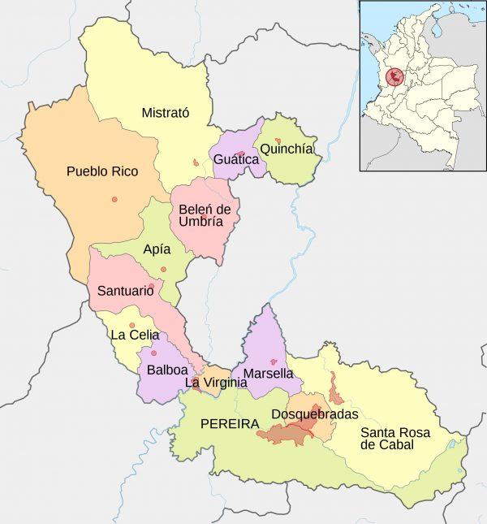
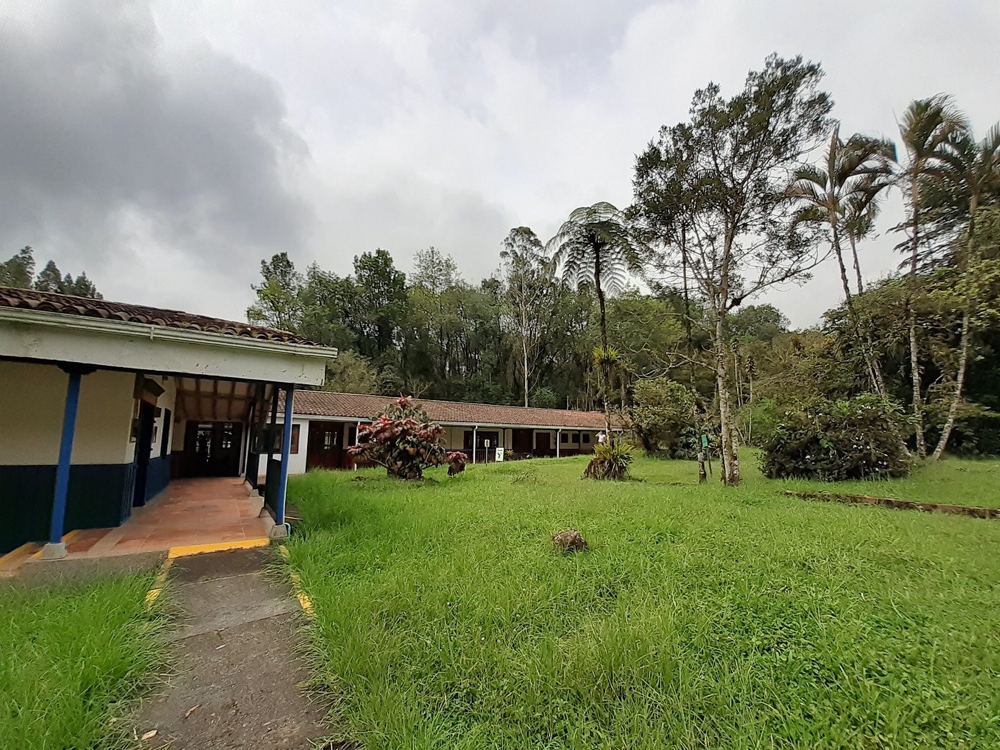
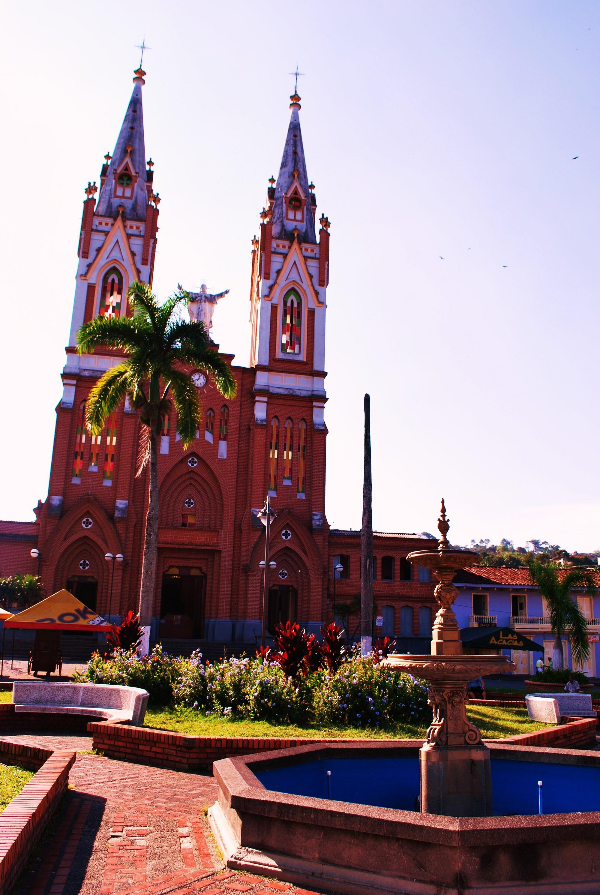

EcoAventura
Risaralda
Eco turismo
Risaralda: Conecta con la naturaleza, vive la experiencia.
Adéntrate en el corazón de Colombia y descubre Risaralda, un departamento que palpita con la vitalidad de la naturaleza y el encanto de sus paisajes. Aquí, donde la Cordillera Central se funde con el Paisaje Cultural Cafetero, te invitamos a explorar un mundo de sensaciones. Desde los picos que acarician las nubes hasta los ríos que serpentean entre valles esmeralda, Risaralda te ofrece un abanico de experiencias ecoturísticas que despertarán tus sentidos y nutrirán tu alma. Recorre senderos ancestrales que te llevarán a cascadas escondidas, observa aves multicolores que danzan entre los cafetales, y sumérgete en la cultura de comunidades que han vivido en armonía con la tierra durante generaciones. En Risaralda, el ecoturismo no es solo una actividad, es una filosofía de vida que nos invita a conectar con la naturaleza de manera responsable y sostenible. Únete a nosotros en este viaje de descubrimiento y sé parte de la conservación de este paraíso natural.


termales de Santa Rosa
Descripción de la tarjeta 2.

parque natural ukumari
Descripción de la tarjeta 2.

Santuario de Fauna y Flora Otún Quimbaya
Descripción de la tarjeta 1.

Cascada de los Frailes
Descripción de la tarjeta 2.

Mirador de Altagracia –
Descripción de la tarjeta 1.

Jardín Botánico de Marsella
Descripción de la tarjeta 2.
preguntas frecuentes
¿Cómo llegar a Risaralda?
El Aeropuerto Internacional Matecaña de Pereira recibe vuelos nacionales e internacionales. Desde allí, puedes alquilar un coche o tomar un autobús para explorar el departamento.
¿Cuál es la mejor época para visitar Risaralda?
Risaralda tiene un clima agradable todo el año. Sin embargo, los meses más secos (diciembre a marzo y julio a agosto) son ideales para actividades al aire libre.
¿Qué tipo de ropa debo llevar?
Ropa cómoda y ligera para el día, y algo abrigado para las noches, especialmente si visitas zonas de montaña. No olvides un impermeable y calzado adecuado para senderismo.
¿Qué actividades ecoturísticas puedo hacer en Risaralda?
Puedes disfrutar de senderismo, observación de aves, rafting, cabalgatas, visitas a fincas cafeteras, y mucho más.
¿Necesito experiencia previa para hacer ecoturismo en Risaralda?
No necesariamente. Hay actividades para todos los niveles, desde principiantes hasta expertos.